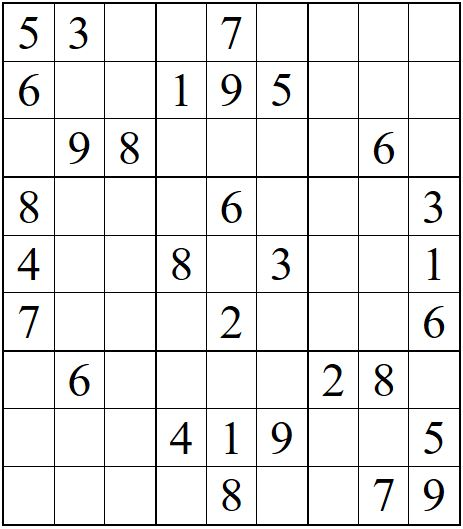

The documentation page can be found here.
Sudoku is played on a 9x9 grid, divided into 3x3 sub-grids. The object of the game is to fill in the blank squares. Each row and column, as well as each 3x3 square, will contain numbers 1-9. More information about sudoku can be found here.
Here is an image of a sudoku game grid.
Once you have read the rules, and understand how to play, click here to open the puzzle and begin play!